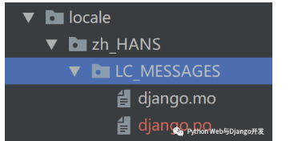

Django国际化
很多时候我们的读者或客户遍布全球, 这时就需要对网站或APP进行国际化，让其支持多种语言。虽然Django的功能强大，但真正实现国际化，让网站根据用户的语言喜好来显示不同的内容并不是一件容易的事。本文将以一个最简单的例子，教你如何设置让Django支持多语种网站。
展示效果
本例展示效果如下，用户选择不同语言，网站即显示翻译过后的内容, 包括footer部分的文本。本例基于Python 3.7和Django 3.0开发，前端boostrap 4, 无需额外的第三方库支持。
到此你只需记住一点：我们实现了中英对照翻译，但这个翻译不是浏览器翻译的，Django也不会帮你翻译。这个需要你自己事先手动翻译好，存放在专门翻译文件中，Django只是事后调用而已。
第一步 修改settings.py配置
假设你已经创建了一个<font style="color:rgb(92, 89, 98);background-color:rgb(245, 246, 250);">myproject</font>的项目，那么为了支持国际化/多语种，你首先应做两件事：
- 在myproject目录下新建
<font style="color:rgb(92, 89, 98);background-color:rgb(245, 246, 250);">locale</font>文件夹，用于保存翻译消息文件(.po和.mo格式的)
- 修改配置文件
<font style="color:rgb(92, 89, 98);background-color:rgb(245, 246, 250);">settings.py</font>
<font style="color:rgb(92, 89, 98);background-color:rgb(245, 246, 250);">settings.py</font>主要设置如下所示：
| Python |
|---|
| from django.utils.translation import ugettext_lazy as _
# 默认语言
LANGUAGE_CODE = 'en-us'
# 设置I18n和L10N为True
USE_I18N = True
USE_L10N = True
# 指定支持语言。这里为了简化只支持简体中文和英文
LANGUAGES = (
('en', _('English')),
('zh-hans', _('Simplified Chinese')),
)
# 用于存放django.po和django.mo编译过的翻译文件
PROJECT_ROOT = os.path.dirname(os.path.realpath(__name__))
LOCALE_PATHS = (
os.path.join(PROJECT_ROOT, 'locale'),
)
|
在这里我们使用了<font style="color:rgb(92, 89, 98);background-color:rgb(245, 246, 250);">ugettext_lazy</font>这个方法，它的作用是在.py文件文件中标记需要翻译的字符串，对其进行惰性参照存储，而不是对字符串进行真正的翻译。我们经常会在<font style="color:rgb(92, 89, 98);background-color:rgb(245, 246, 250);">models.py</font>中定义字段时用到它，也会在<font style="color:rgb(92, 89, 98);background-color:rgb(245, 246, 250);">views.py</font>中用到它，指定需要翻译的字符串。然而在模板html文件中我们并不能直接使用<font style="color:rgb(92, 89, 98);background-color:rgb(245, 246, 250);">ugettext_lazy</font>这个方法，而是使用<font style="color:rgb(92, 89, 98);background-color:rgb(245, 246, 250);">{% trans "string" %}, {% blocktrans%} {%endblocktrans %}</font>这两个标签来标记需要翻译的字符串。
注意：这两个标签也不是对字符串进行真正的翻译，只是标记而已。使用这两个模板标签前需要在模板的最开始地方加入<font style="color:rgb(92, 89, 98);background-color:rgb(245, 246, 250);">{% load i18n %}</font>。
最后别忘了加入<font style="color:rgb(92, 89, 98);background-color:rgb(245, 246, 250);">LocaleMiddleware</font>这个中间件。它的位置也很重要，应于<font style="color:rgb(92, 89, 98);background-color:rgb(245, 246, 250);">SessionMiddleware</font>之后，<font style="color:rgb(92, 89, 98);background-color:rgb(245, 246, 250);">CommonMiddleware</font>之前。
| Python |
|---|
| MIDDLEWARE = [
'django.middleware.security.SecurityMiddleware',
'django.contrib.sessions.middleware.SessionMiddleware',
'django.middleware.locale.LocaleMiddleware', # 新增多语支持
'django.middleware.common.CommonMiddleware',
'django.middleware.csrf.CsrfViewMiddleware',
'django.contrib.auth.middleware.AuthenticationMiddleware',
'django.contrib.messages.middleware.MessageMiddleware',
'django.middleware.clickjacking.XFrameOptionsMiddleware',
]
|
小知识：
<font style="color:rgb(92, 89, 98);background-color:rgb(245, 246, 250);">i18n</font>是国际化(Internationalization)的缩写。i 和 n 之间有 18 个字母，简称 I18N,。l10n是本地化(localization)的缩写。l 和 n 之间有 10 个字母，简称 L10N。
第二步 修改项目的urls.py
本步动作是为了增加对国际化i18n的支持，具体代码如下所示(注意：这里是项目目录下urls.py, 不是app下urls.py)。<font style="color:rgb(92, 89, 98);background-color:rgb(245, 246, 250);">i18n_patterns</font>的作用是让每个url前面自动加上所选语言的代码，比如<font style="color:rgb(92, 89, 98);background-color:rgb(245, 246, 250);">/en/</font>, <font style="color:rgb(92, 89, 98);background-color:rgb(245, 246, 250);">/zh-hans/</font>等等。
| Python |
|---|
| from django.contrib import admin
from django.urls import path, include
from django.conf.urls.i18n import i18n_patterns
urlpatterns = [
path('i18n/', include('django.conf.urls.i18n')),
]
urlpatterns += i18n_patterns(
path('admin/', admin.site.urls),
path('', include('myapp.urls')),
)
|
实际上现在你已经可以通过访问Django自带的admin来检验你的国际化设置是否成功了。分别访问http://127.0.0.1:8000/en/admin/和http://127.0.0.1:8000/zh-hans/admin/你将看到不同语言版本，
第三步 在.py, .html和.txt文件中标记需要翻译的字符串
Django支持在python文件，html和txt文本文件中标记需要翻译的字符串。在python文件中使用<font style="color:rgb(92, 89, 98);background-color:rgb(245, 246, 250);">ugettext_lazy</font>方法或则简写的<font style="color:rgb(92, 89, 98);background-color:rgb(245, 246, 250);">_</font>，在html和txt文件中使用<font style="color:rgb(92, 89, 98);background-color:rgb(245, 246, 250);">trans</font>和<font style="color:rgb(92, 89, 98);background-color:rgb(245, 246, 250);">blocktrans</font>标签, 使用前还需在文件开头加入 <font style="color:rgb(92, 89, 98);background-color:rgb(245, 246, 250);">{% load i18n %}</font>。重要的话多说几遍也无妨。
本例中我们不需要使用到模型，只需开发一个url，所以只需要一个视图(index)和模板(index.html)。相应内容如下所示：
| Python |
|---|
| # myapp/urls.py
from django.urls import path
from . import views
app_name = 'myapp'
urlpatterns = (
path('', views.index, name='index'),
)
|
在视图中我们使用<font style="color:rgb(92, 89, 98);background-color:rgb(245, 246, 250);">ugettext_lazy</font>方法标记了一个需要翻译的字符串”Welcome to China”。
| Python |
|---|
| # myapp/views.py
from django.shortcuts import render
from django.utils.translation import ugettext_lazy as _
# Create your views here.
def index(request):
context = {'msg': _("Welcome to China")}
return render(request, 'myapp/index.html', context)
|
模板文件较长，请全文复制，解读在后面。模板路径为<font style="color:rgb(92, 89, 98);background-color:rgb(245, 246, 250);">myapp/templates/myapp/index.html</font>。
| Python |
|---|
| <!DOCTYPE html>
{% load static %}
{% load i18n %}
{% load core_tags_filters %}
<html lang="en">
<head>
<meta charset="utf-8">
<meta name="viewport" content="width=device-width, initial-scale=1, shrink-to-fit=no">
<meta name="description" content="">
<title>Django房产网</title>
<link rel="canonical" href="https://getbootstrap.com/docs/4.5/examples/">
<!-- Bootstrap core CSS -->
<link href="https://stackpath.bootstrapcdn.com/bootstrap/4.5.0/css/bootstrap.min.css" rel="stylesheet" integrity="sha384-9aIt2nRpC12Uk9gS9baDl411NQApFmC26EwAOH8WgZl5MYYxFfc+NcPb1dKGj7Sk" crossorigin="anonymous">
<style>
body {
overflow-x: hidden; /* Prevent scroll on narrow devices */
font-family: 'Inter', Arial, sans-serif;
background: #F6F8FF;
padding-top: 56px;
}
</style>
</head>
<body>
<nav class="navbar navbar-expand-md fixed-top navbar-light box-shadow bg-white">
<div class="container">
<a class="navbar-brand align-items-md-center" href="index.html">Django双语示例</a>
<form class="form-inline ml-3-md" action="{% url 'set_language' %}" method="post">
{% csrf_token %}
<div class="input-group">
<input name="next" type="hidden" value="{{ redirect_to }}" />
<select name="language" class="form-control">
{% get_current_language as LANGUAGE_CODE %}
{% get_available_languages as LANGUAGES %}
{% get_language_info_list for LANGUAGES as languages %}
{% for language in languages %}
<option value="{{ language.code }}"{% if language.code == LANGUAGE_CODE %} selected{% endif %}>
{{ language.name_local }}
</option>
{% endfor %}
</select>
<div class="input-group-append">
<button type="submit" class="btn btn-inline btn-sm bg-warning">
{% trans "Select" %}
</button>
</div>
</div>
</form>
</div>
</nav>
{% block content %}
<div class="py-4 px-3 bg-light">
<div class="container">
{% get_current_language as LANGUAGE_CODE %}
<h4>{% trans 'Current language code' %}: {{ LANGUAGE_CODE }}</b> </h4>
<p><small>{% trans "Welcome to our page" %}</small></p>
<hr/>
<p>{% blocktrans %} {{ msg }} {% endblocktrans %}</p>
</div>
</div>
{% endblock %}
<footer class="bd-footer bg-light">
<div class="container pt-3 pb-2 px-3 px-md-2">
<ul class="bd-footer-links list-unstyled text-muted list-inline pb-2">
<li class="list-inline-item">
<small>© Example.com</small>
</li>
<li class="list-inline-item right"><a href="https://twitter.com/getbootstrap"><small>{% trans 'Privacy and Cookie' %}</small></a></li>
<li class="list-inline-item right"><a href="/docs/4.5/examples/"><small>{% trans 'Terms and Conditions' %}</small></a></li>
</ul>
</div>
</footer>
<script src="https://code.jquery.com/jquery-3.5.1.slim.min.js" integrity="sha384-DfXdz2htPH0lsSSs5nCTpuj/zy4C+OGpamoFVy38MVBnE+IbbVYUew+OrCXaRkfj" crossorigin="anonymous"></script>
<script src="https://cdn.jsdelivr.net/npm/popper.js@1.16.0/dist/umd/popper.min.js" integrity="sha384-Q6E9RHvbIyZFJoft+2mJbHaEWldlvI9IOYy5n3zV9zzTtmI3UksdQRVvoxMfooAo" crossorigin="anonymous"></script>
<script src="https://stackpath.bootstrapcdn.com/bootstrap/4.5.0/js/bootstrap.min.js" integrity="sha384-OgVRvuATP1z7JjHLkuOU7Xw704+h835Lr+6QL9UvYjZE3Ipu6Tp75j7Bh/kR0JKI" crossorigin="anonymous"></script>
</html>
|
模板文件中最重要的一段代码如下所示。
| Python |
|---|
| {% block content %}
<div class="py-4 px-3 bg-light">
<div class="container">
{% get_current_language as LANGUAGE_CODE %}
<h4>{% trans 'Current language code' %}: {{ LANGUAGE_CODE }}</b> </h4>
<p><small>{% trans "Welcome to our page" %}</small></p>
<hr/>
<p>{% blocktrans %} {{ msg }} {% endblocktrans %}</p>
</div>
</div>
{% endblock %}
|
<font style="color:rgb(92, 89, 98);background-color:rgb(245, 246, 250);">{% load i18n %}</font>以后，你可以使用<font style="color:rgb(92, 89, 98);background-color:rgb(245, 246, 250);">get_current_language</font>标签获得当前语言。我们还在模板中分别使用<font style="color:rgb(92, 89, 98);background-color:rgb(245, 246, 250);">{% trans "string" %}</font>和<font style="color:rgb(92, 89, 98);background-color:rgb(245, 246, 250);">{% blocktrans%} {%endblocktrans %}</font>标签来标记了两个需要翻译的字符串，一个是模板中已存在的字符串，一个是视图函数传递过来的变量。
另外模板中还有一段通过session用于切换语言的标准代码，大家可以随时拿去用。
| Python |
|---|
| <form class="form-inline ml-3-md" action="{% url 'set_language' %}" method="post">
{% csrf_token %}
<div class="input-group">
<input name="next" type="hidden" value="{{ redirect_to }}" />
<select name="language" class="form-control">
{% get_current_language as LANGUAGE_CODE %}
{% get_available_languages as LANGUAGES %}
{% get_language_info_list for LANGUAGES as languages %}
{% for language in languages %}
<option value="{{ language.code }}"{% if language.code == LANGUAGE_CODE %} selected{% endif %}>
{{ language.name_local }}
</option>
{% endfor %}
</select>
<div class="input-group-append">
<button type="submit" class="btn btn-inline btn-sm bg-warning">
{% trans "Select" %}
</button>
</div>
</div>
</form>
|
此时你启动测试服务器，应该能看到页面已经能正确显示。但是当你切换不同语言时，页面显示的内容还是一样的，这是因为我们还没对那些字符串进行翻译啊。
第四步 生成.po和.mo编译消息文件
现在到了关键步骤了，也是最后一步。我们需要对前面标记的字符串进行手动翻译，并生成编译过后的消息文件供Django使用。新手最容易犯的错误就是以为<font style="color:rgb(92, 89, 98);background-color:rgb(245, 246, 250);">trans</font>标签能实现自动翻译，以为国际化就到此为止了。整个过程一共有3步, 请仔细阅读别走错。
第一步： 进入项目文件夹，使用<font style="color:rgb(92, 89, 98);background-color:rgb(245, 246, 250);">django-admin makemessages -l zh_HANS</font>命令提取所有前面标记需要翻译的字符串。该命令会自动生成一个名为<font style="color:rgb(92, 89, 98);background-color:rgb(245, 246, 250);">django.po</font>的文件，地址如下所示：

注意：这里是<font style="color:rgb(92, 89, 98);background-color:rgb(245, 246, 250);">zh_HANS</font>是下划线的形式，而不是语言代码简写<font style="color:rgb(92, 89, 98);background-color:rgb(245, 246, 250);">zh-hans</font>。
<font style="color:rgb(92, 89, 98);background-color:rgb(245, 246, 250);">django.po</font>文件刚开始内容如下所示。你可以看到需要翻译的字符串，但翻译内容为空。
| Python |
|---|
| #: .\house\templates\house\index.html:27
msgid "Welcome to our page"
msgstr ""
#: .\house\templates\house\index.html:29 .\house\templates\house\index1.html:65
#, python-format
msgid " %(msg)s "
msgstr ""
#: .\house\templates\house\index1.html:48
msgid "Select"
msgstr ""
#: .\house\templates\house\index1.html:60
#, fuzzy
msgid "Welcome to our website"
msgstr ""
|
第二步：修改<font style="color:rgb(92, 89, 98);background-color:rgb(245, 246, 250);">django.po</font>文件，添加手动翻译的字符串。
| Python |
|---|
| #: .\house\templates\house\index.html:27
msgid "Welcome to our page"
msgstr "欢迎来到我们主页"
#: .\house\templates\house\index.html:29 .\house\templates\house\index1.html:65
#, python-format
msgid " %(msg)s "
msgstr ""
#: .\house\templates\house\index1.html:48
msgid "Select"
msgstr "选择"
#: .\house\templates\house\index1.html:60
#, fuzzy
msgid "Welcome to our website"
msgstr "欢迎来到我们网站"
|
第三步：使用<font style="color:rgb(92, 89, 98);background-color:rgb(245, 246, 250);">python manage.py compilemessages</font>命令生成翻译编译文件。
该命令会生成一个<font style="color:rgb(92, 89, 98);background-color:rgb(245, 246, 250);">django.mo</font>的文件，内容如下所示。这个就是Django最后需要调用的翻译文件，里面包含了翻译过后的字符串列表。
| Python |
|---|
| Report-Msgid-Bugs-To:
PO-Revision-Date: YEAR-MO-DA HO:MI+ZONE
Last-Translator: FULL NAME <EMAIL@ADDRESS>
Language-Team: LANGUAGE <LL@li.org>
Language:
MIME-Version: 1.0
Content-Type: text/plain; charset=UTF-8
Content-Transfer-Encoding: 8bit
Plural-Forms: nplurals=1; plural=0;
当前语言代码 英语 隐私与Cookie 选择 简体中文 服务条款与协议 欢迎来到中国 欢迎来到我们主页
|
现在你重新启动服务器就应该可以看到文初展示的效果了，神不神奇?
Windows用户注意事项
windows系统下使用<font style="color:rgb(92, 89, 98);background-color:rgb(245, 246, 250);">makemessages</font>和<font style="color:rgb(92, 89, 98);background-color:rgb(245, 246, 250);">compilemessages</font>命令时会出现错误，这是因为windows缺少基于GNU的<font style="color:rgb(92, 89, 98);background-color:rgb(245, 246, 250);">gettext</font>模块。安装方式如下：
- https://mlocati.github.io/articles/gettext-iconv-windows.html下载相应版本，安装或解压缩到C盘或D盘, 比如C:\Program Files (x86)\gettext
- 把gettex下的bin地址，比如C:\Program Files (x86)\gettext\bin加入到系统PATH的环境变量(在控制面板>系统>高级>环境变量中添加)。
- 如果pycharm的terminal中运行两个命令有问题，请直接在windows的cmd窗口运行。
Linux系统如果缺少可以使用<font style="color:rgb(92, 89, 98);background-color:rgb(245, 246, 250);">sudo apt-get install gettext</font>安装。
小结
本文以实例展示了如何让Django开发的网站支持多语种，其中技能你get到了吗? 你是不是也曾经以为<font style="color:rgb(92, 89, 98);background-color:rgb(245, 246, 250);">ugettext_lazy</font>方法, <font style="color:rgb(92, 89, 98);background-color:rgb(245, 246, 250);">trans</font>和<font style="color:rgb(92, 89, 98);background-color:rgb(245, 246, 250);">blocktrans</font>标签会自动帮你翻译文本呢？